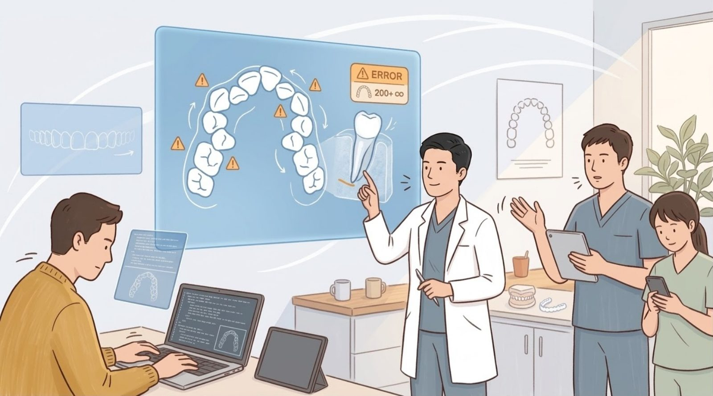

文章 HERO 的「簡單動畫感」— 用 SVG ＋ CSS 做
三張都是站上已經上線的圖，圖檔一個位元組都沒有改。會動的東西是疊在圖上面的 SVG。
- 底下的切換條可以調幅度與速度，各三格，挑一格告訴我。
- 按「對照現況」可以把特效整個關掉，那就是現在站上的樣子。
- 你的手機開著「減少動態效果」，所以這一頁預設不跟它 —— 切換條上可以切回去看差別。
- 按「量測」看這三段特效實際多花了多少位元組、以及現在的幀率。
① 轉
植牙能用多久：世界第一顆植牙用了四十年

動的是：大鐘的秒針（14 秒一圈）、另外兩顆鐘的秒針（11／18 秒，故意不同步）、沙漏的落沙與慢慢長高的沙堆。
② 亮與縮放
隱形矯正：模擬之後，醫師怎麼讓牙齒跑到位

動的是：右上角那塊黃色的警告標示放大縮小（快，1.24 秒一次）、五個驚嘆號由左而右依序亮一下（中，3.4 秒一輪）。
兩個速度已經各自定案並寫死；底下那支「速度」是整體倍率，動它兩者的快慢關係不變。
牙齒的轉動已經整組拿掉，整面螢幕的光帶也早在上一輪拿掉了。
③ 呼吸
貝氏刷牙法：刷了三十年，可能一直刷錯地方

動的是：三個放大圈由左而右依序亮一圈環（3.2 秒一輪），第三個圈裡多一個刷頭沿著原本那支箭頭小幅度來回 —— 那正是貝氏刷牙法的動作。
三張圖的檔案、尺寸、srcset 都沒有動。這一頁沒有載入任何影片、GIF 或額外的圖。